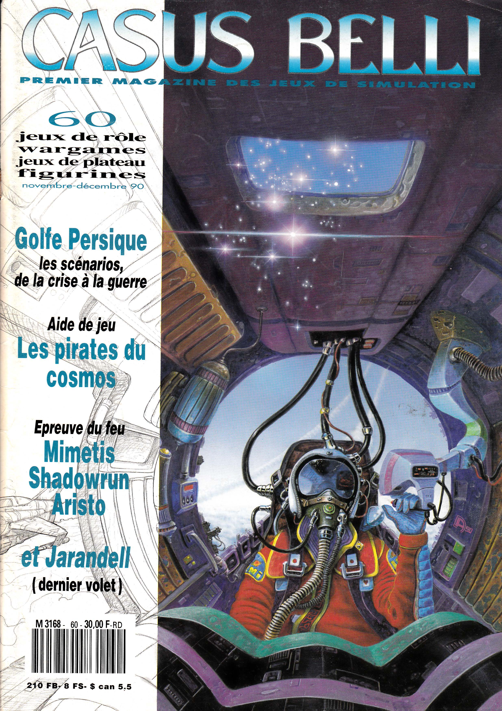
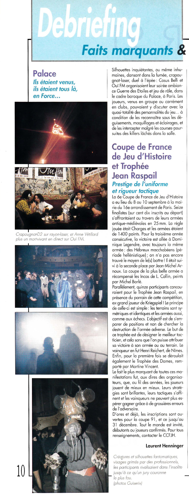
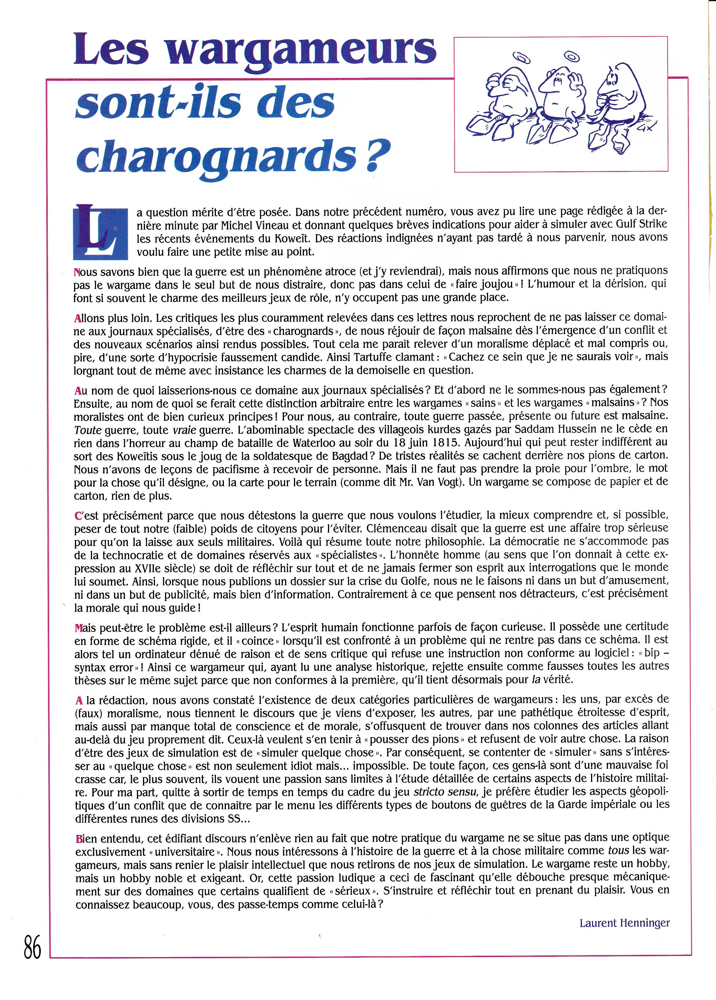

Et voilà 1990 qui se termine et le Casus qui paraît vers cette mi-novembre. Je reprends la suite des informations du bimestre précédent puisque l’agitation dans les lycées prend de l’ampleur, et atteint son paroxysme avec une manifestation de 100 000 lycéens le 12 novembre, qui va surtout marquer les esprits avec les scènes de casse et de pillage qui donnent plus une image d’émeute urbaine de l’événement que de revendication un peu animée, comme le montrent alors les reportages de l’époque : https://www.ina.fr/ina-eclaire-actu/vid … s-casseurs
Tout cela vient en écho avec les émeutes urbaines à peine un mois auparavant à Vaulx en Velin comme on l’avait évoqué pour le numéro précédent. Quelques autres informations en provenance de l’Hexagone : pendant qu’on rebouche les trous dans le Nord avec la fermeture très médiatisée du dernier Puits de Mine, on creuse ailleurs dans le Nord pour réussir la jonction du tunnel sous la Manche entre le Royaume-Uni et la France, lui-même très médiatisé.
Des p’tits trous, des p’tits trous :
- https://www.ina.fr/ina-eclaire-actu/vid … ere-partie
- https://www.ina.fr/ina-eclaire-actu/vid … a-jonction
L’impact économique n’est pourtant pas le même, entre les deux capitales Paris et Londres qui vont se relier, tandis que le Nord ne devient plus qu’une terre de passage avec une casse humaine et sociale pour la région finalement pas si éloignée de ce qui se produit en RDA.
Plus comptable, mais qui nous parle encore plus, c’est aussi en cette fin d’année 1990 que le projet de loi pour la création de la CSG apparaît. Cette initiative menace alors de renverser le Gouvernement Rocard, après une motion de censure très serrée de 289 voix contre 284, avec toute une fraction de la Gauche qui se désolidarise, et Mitterrand – qui apprécie peu son Premier Ministre – tirant probablement quelques fils en coulisse. Cela inaugure un contexte d’instabilité parlementaire et gouvernementale finalement pas si propre à notre situation actuelle.
Si les nouvelles hexagonales de cette fin d’année sont assez riches, je n’ai pas grand-chose à raconter sur les autres pays. Un an après le Chute du Mur de Berlin, toute l’Europe de l’Est a amorcé sa transition pour sortir des régimes de Parti Unique d’inspiration communiste : même l’Albanie jusqu’ici très isolée finit par basculer en ce mois de décembre avec le début de manifestations populaires et l’ouverture vers le multi-partisme. Comme un écho qui répond, la victoire le 9 décembre de Lech Walesa à l’élection présidentielle en Pologne, fait office de symbole de conclusion par rapport au rôle d’origine que la Pologne et Solidarnosc ont joué pour secouer l’emprise soviétique sur cette partie du continent.
L’actualité internationale est donc majoritairement occupée par ce qui est encore la Crise du Golfe, mais désormais plus que pour quelques semaines… Après l’échec manifeste des discussions engagées depuis août – septembre, les Etats-Unis intensifient leur effort en annonçant le doublement des effectifs de l’opération « Bouclier du Désert », ce qui concrétise les effectifs d’une armée complète pour passer à l’offensive, et pas seulement pour rester dans une stratégie de force de protection et d’intimidation. L’URSS donne son accord de principe pour une intervention, et les autres pays occidentaux constituent également des renforts (Opération Daguet en France avec bientôt 10 000 militaires déployés peu avant le déclenchement des hostilités). L’ONU est à l’unisson avec la résolution 678 qui rend légitime l’emploi de la force contre l’Irak, et fixe un ultimatum / date butoir au 15 janvier 1991. Saddam Hussein compte pour sa part sur la puissance de son armée pour tenir le choc, et ne bouge pas d’un iota sa politique sur cette dernière période cruciale.
Les nouvelles économiques sombres de fin d’année passent un peu en retrait du reste de l’actualité. Pourtant la situation s’aggrave en raison du choc géopolitique, mais aussi d’un ralentissement qui s’était déjà amorcé avant. Cette morosité va lourdement marquer la première moitié de cette décennie 1990 : le déficit public aux Etats-Unis dépasse 5% et le taux de chômage remonte à 6,3%. En France, le chômage est resté stable à 8% et confirme la décrue amorcée depuis début 1988, mais cette amélioration va s’arrêter net dès 1991.
Casus 60, c’est parti avec ce numéro qui inaugure une nouvelle décalogie du magazine alors que symboliquement il referme l’année 1990. Au-delà du chiffre symbolique, ce numéro sera aussi symbolique avec quelques battements d’ailes de papillon disséminés à droite et à gauche, et qui deviendront des phénomènes majeurs ensuite.
La couverture est d’Alain Lambert, mêlant relents d’actualité et d’imaginaire aussi :

Je commence par les actualités suite à la rentrée 1990 avec deux choses majeures. La première, c’est la soirée au Palace Casus Belli : on aura surtout des photos plus que du texte, mais whaou le crapougnat en animation laser ! Extrait sur cette soirée unique mais dont j’aimerai bien qu’un des participants nous en raconte la mémoire :

En effet, même pour célébrer la parution du numéro 100, Casus ne refera pas un événement de la même ampleur et rétrospectivement, j’aurais bien aimé vivre cette expérience atypique.
L’autre retour hallucinant et halluciné est le GN de Laurent Henninger en pleine Sibérie, dans ce qui est encore l’Union Soviétique, mais en stade de décomposition : il nous en livre un reportage assez bref et édifiant… Toujours dans les GN à l’étranger, on nous parle aussi du millier de participants au Summerfest au Royaume-Uni, en demandant quand un événement de ce type sera créé de l’autre côté du Channel : le fait que la délégation belge soit mentionnée ne sera peut-être pas étranger à ce qui donnera AVATAR ensuite.
Dans le rédactionnel divers et varié de ce numéro et de cette période, on relèvera une chronique TV de l’époque où Casus nous parle du jeu télévisé Le Chevalier du Labyrinthe, où on déplore que l’émission se soit réappropriée le nom Laelith pour un de ses figurants sans consultation de CB ; et on parle des débuts de Fort Boyard qui a commencé à diffuser lors de l’été 1990. Il ne sera cependant pas mentionné pour ce dernier les mêmes vols d’idées indélicats comme pour Le Chevalier du Labyrinthe, mais plus la stratégie proposée par Le Barbare Déchaîné d’aller tout défoncer dans les salles avec une hache +12 plutôt que de s’embarrasser à tenter de résoudre les énigmes 😄
Plus anecdotique, mais que je trouve maintenant particulièrement savoureux, Frank Stora nous parle de son association de wargame – l’AJHIS – et de sa location d’un deux-pièces + cuisine-salle de bains à Paris, partagée par tous les membres (chacun a une clé), et qui leur permettent de déballer leurs cartes de wargames de 4m sur 4, et jouer en laissant tout le matériel en l’état. Frank précise que ça leur coûte 200 FF par membre et par mois : le SMIC est alors à 5500 FF, et Frank est médecin. Mais cela nous fait revenir dans une réalité maintenant complètement illusoire, à l’époque où le marché immobilier parisien amorce une longue dépression qui en fera globalement un non-sujet dans les années 1990 quand on voulait se loger dans la capitale.
On passe sur les annonces et les critiques, puisque Noël se prépare et qu’il faut bien remplir la hotte de cadeaux : le Hors-Série Laelith de Casus est donc annoncé pour le 19 décembre, et les autres éditeurs ne sont pas en reste, enfin ceux qui peuvent se le permettre : en effet, l’aventure se termine pour Dragon Radieux avant même que cette année ne s’achève. Pareil pour Schmidt France qui se retire du marché. Flamberge est encore là avec une 2ème édition pour Les Divisions de l’Ombre et la sortie du fameux Prédateurs, production française donc directement inspirée de Lestat le Vampire d’Ann Rice… Chez les locomotives classiques du PLUF, Hexagonal propose sa VF de la 1ère édition de Shadowrun, Oriflam élargit ses gammes avec Pendragon et l’annonce de la traduction de la 2ème édition de Cyberpunk et Siroz continue de développer frénétiquement INS / MV avec Berserker, Baron Samedi et l’annonce de Mors Ultima Ratio.
La production de Jeux Descartes est massive et dorénavant fermement axée sur les licences et les traductions : le supplément Visite guidée du secteur DOA pour Paranoïa, l’excellent recueil de scénario Les Grands Anciens pour l’Appel de Cthulhu je crois très apprécié également par @Tristan , du TORG en masse – l’écran, le scénario La Carte de la Destinée et le supplément sur le Terre Vivante.
Et comme le sapin de Noël approche, on a aussi une profusion de jeux de plateau. Casus nous rappelle déjà qu’Aristo, qui est critiqué plus loin dans ses pages, reste disponible malgré la disparition du Dragon Radieux. Chez Eurogames, sorties prévues et simultanées de Vertigo, Droïds et Le paresseux, ainsi que l’annonce incertaine du 2ème volet de Dragon Noir. Et pour Ludodélire, rien moins que Footmania et La Vallée des Mammouths. Enfin Descartes et Siroz ne sont pas en reste avec respectivement une nouvelle version d’Armada et l’extension Turbo Chargers pour Car Wars. Bref, on frise manifestement la même saturation que celle qui nous guette actuellement sur les créneaux du jeu de plateau, à une époque où ils sont pratiqués encore plus marginalement que les jeux de rôle.
Les Têtes d’Affiche viennent enfin nous parler parfois de jeux plus confidentiels, sortis sans que les auteur(e)s ne se lancent dans l’aventure entrepreneuriale pour monter un éditeur – ce qui est sage vu le contexte économique qui continue à se dégrader. Ce sont les prémisses de la scène indé : est ainsi chroniqué dans ce numéro Polar, jeu innovant sur le thème du Noir d’un certain Olivier Legrand – @Olivier.Legrand c’était déjà toi ?
On passe l’Atlantique (je ne dis même plus la Manche avec le retrait massif du JDR de Games Workshop) pour les productions en anglais, avec une profusion destinée à charger lourdement la hotte de Santa Claus. Chez FASA, c’est surtout concentré sur Shadowrun avec les campagnes mythiques comme Harlequin et Dragon Hunt, et le Guide sur l’Amérique du Nord qui se profile. De son côté Talsorian a sorti la 2ème édition de Cyberpunk, et on apprend que les travaux progressent sur Amber qui aurait un système sans dé  . Steve Jackson Games produit encore et toujours du GURPS : Uplift, et bientôt Time Travel et Magic Items. Chez West End Games, on mise sur désormais leurs deux grosses licences : Star Wars (Rebel Alliance Sourcebook, puis à venir le module Death in the Undercity et le déjà Galaxy Guide 6: Tramp Freighters, écrit par un obscur Mark Rein-Hagen à l’époque ^^ et avec un tout aussi obscur Stewart Wieck dont on va reparler peu après) ; et pour TORG le guide pour Aysle et le recueil de scénarios The Cassandra Files (qui ne sera jamais traduit malgré la politique très volontariste de Jeux Descartes sur ce jeu).
. Steve Jackson Games produit encore et toujours du GURPS : Uplift, et bientôt Time Travel et Magic Items. Chez West End Games, on mise sur désormais leurs deux grosses licences : Star Wars (Rebel Alliance Sourcebook, puis à venir le module Death in the Undercity et le déjà Galaxy Guide 6: Tramp Freighters, écrit par un obscur Mark Rein-Hagen à l’époque ^^ et avec un tout aussi obscur Stewart Wieck dont on va reparler peu après) ; et pour TORG le guide pour Aysle et le recueil de scénarios The Cassandra Files (qui ne sera jamais traduit malgré la politique très volontariste de Jeux Descartes sur ce jeu).
ICE toujours en grande forme continue à se diversifier tous azimuts : du MERP / JRTM (Angus McBride Characters of Middle Earth, et des scénarios), du Rolemaster (Rolemaster Caracter Record, fiches de perso pré-remplies pour simplifier les calculs, ainsi que des scénarios pour le Shadow Wolrd), du SpaceMaster (Space Companion I), du Cyberspace (le supplément Death Valley Free Prison pour faire du Mad Max II et III, et le module Death Game 2090). Et comme Rolemaster n’est manifestement pas assez générique, ICE développe dans la même logique que le GURPS de SJG des modules généralistes comme Mythic Egypt, ou continue de capitaliser sur le Hero System avec les modules Fantasy Hero ou Fantasy Hero Companion. Mais enfin sans oublier que le Hero System provient de sa gamme Champions qui s’étend aussi avec le supplément Kingdom of Champions, pour décrire la Grande-Bretagne dans le contexte des Super Héros, mélange qui me semble aussi audacieux qu’un plat de cuisine anglais mêlant gigot et sauce à la menthe.
Quant à TSR, on a toujours des informations laconiques qui clôturent une année 1990 pleine où cet éditeur majeur n’a plus de représentation en France : les informations sont donc extrêmement éparses (Casus relate par exemple pour Buck Rogers que sont prévus des modules sans plus de précision…) et il faut en fait se référer aux publicités de VPC pour se rendre compte de la production réelle de l’éditeur de Lake Geneva. C’est assez déprimant, mais en même temps une aubaine et une exception (ici aussi !) pour notre pays pour laisser la place à plein d’autres matériels.
A côté de ces grosses machines héritées des années 1980, apparaissent de façon très timides deux outsiders qui vont marquer cette nouvelle décennie maintenant entamée. Dans le monde du wargame, on nous annonce la création de GMT Games ; et côté JDR, on publie les bans du mariage entre Lion Rampant (qui continue à publier pour Ars Magica, et dans lequel Stewart Wieck va contribuer pour le scénario à paraître The Tempest) et White Wolf, dont l’activité se limitait jusqu’ici à un magazine de JDR publié par Stewart et Steve Wieck. Mark Rein-Hagen rejoint ainsi à ce moment les frères Wieck pour le meilleur et pour le pire, dans une épopée équivalente au TSR des années 1970-1980. Pourtant, et bien que le Prédateurs de Flamberge soit annoncé, il n’est pas encore fait mention de la parution prochaine de Vampire… Suspense !
Je complète les prévisions ludiques avec une revue des critiques de ce numéro : encore beaucoup de wargames, les JDR se limitent donc à la 2ème édition de Twilight 2000 après le Portrait de Famille de la 1ère édition de Twilight 2000 du numéro précédent qui outre une refonte des règles, réécrit son background pour tenir compte de l’évolution géopolitique avec la Chute du Mur de Berlin. Même travail de réécriture du background pour la nouvelle édition de Chill et une orientation moins action, qui semble donner le ton des jeux contemporains à venir dans les années 1990.
Tristan s’intéresse pour sa part à Imperium, le supplément pour la Terre Creuse écrit par l’auteur des romans, Alain Paris, et illustré par Guillaume Sorel et Alain Gassner : si vous voulez la relire en entier, c’est ici - https://www.legrog.org/jeux/terre-creus … erium-fr#0. Je fais une petite digression car cela signe la fin de l’aventure éditoriale des Silmarils, avec qui la collaboration d’Alain Paris – maintenant décédé – ne semble pas s’être bien passée : https://sfmag.net/spip.php?article14
A propos de petits éditeurs, on trouvera aussi une Epreuve du Feu sur Mimetis : on sent Pierre Lejoyeux à la peine pour rester dans la ligne éditoriale neutre-bon de Casus et présenter le jeu sous un aspect positif, notamment quand il s’agit de balancer le pour et le contre. Un bel exercice d’équilibriste, qui ne sauvera cependant pas cette autre aventure éditoriale.
Moins confidentiel, l’autre Epreuve du Feu sera pour la 1ère édition de Shadowrun en VF et signée Jean-Michel Ringuet. Comme l’EdF de TORG de Tristan dans le numéro précédent, elle est surtout descriptive plus que critique, mais on savourera tout de même ces passages : « Shadowrun (n’en déplaise à certains) est un jeu aux règles simples et synthétiques » ou « Traduction fort honnête ». Alors que cette première édition brouillonne chez Hexagonal sera beaucoup décriée ensuite, rendons justice à Jean-Michel qui pointe quand même les maladresses qui ne feront pas date telles que ubargot pour street language, ou les combinaisons anglais-français peu heureuses comme endocéphaloware ou somatoware… Enfin, rappelons que lors de la parution de la VO, CROC – grand thuriféraire de Shadowrun et qui ne manquera pas de dégommer la 1ère édition d’Hexagonal quand il critiquera la 2ème édition passée chez Descartes – avait également encensé les règles du jeu et jugé le background pas terrible…
Comme d’habitude pour ce numéro, 4 scénarios en encart dont un pour Shadowrun avec l’EdF, mais en revanche pas pour Mimetis - ce jeu n’aura jamais eu l’honneur d’une publication scénaristique dans CB. Les trois autres proposés sont donc pour AD&D et, soutien de Simulacres oblige, un Space Opera générique (mais adaptable Star Wars), et un Horreur Contemporain générique (mais adaptable Cthulhu 90 et Chill). Pour ceux deux derniers, je vais donc m’intéresser pour savoir comment ils étaient facilement fongibles dans les jeux du marché, car c’était aussi l’ambition avec ces versions Simulacres de proposer des scénarios facilement adaptables ailleurs, pour éviter l’effet repoussoir d’un encart scénario où on ne trouverait jamais ses jeux de prédilection, alors que le marché continuait à s’étirer vers l’infini.
Les scénarios pour ce numéro sont donc :
• L’enfant qui croyait aux légendes pour AD&D de Denis Beck, dont le démarrage se situe à Laelith et qui est repris dans le Recueil édité par BBE, mais qui n’exploite pas le décor urbain. Il s’agit surtout d’un bon scénario med fan, déroutant et même un véritable exercice de style qui aurait mérité une pagination doublée (et c’est d’ailleurs dommage que le Recueil de BBE n’ait pas proposé le même exercice de relecture et réécriture que Le Musée de Lhomme en son temps). Et quitte à mettre un bon coup de manivelle et d’huile de coude sur ce travail, je me demande par rapport à quelques discussions et réflexions récentes sur Changelin Le Songe si ce scénario ne pourrait pas être transposable ? Bref, à découvrir si vous avez la possibilité d’y accéder
• Sluagh-ghairm en SimulacreS Horreur Contemporain de Pierre Lejoyeux : cette petite enquête qui ne paye pas de mine se révèle en fait pleine de ressources. Déjà bien qu’écrite en 1990, on peut la transposer sans difficulté en 2025 et la garder pour ce qu’elle est : un petit scénar sympatoche pour du SimulacreS contemporain, ou tout système ayant votre préférence pour ce type de contexte, que vous pourrez utiliser pour une partie d’initiation avec un groupe de joueuses et joueurs pas forcément amateur de médiéval fantastique ou de dépaysement trop fort. Après il y a aussi plein de possibilités pour tordre ce scénario : comme c’est prévu pour du Chtulhu 90, on peut aussi le ramener sur du Cthulhu Années 1920 / 1930, ou le basculer sur du KULT ou des jeux d’épouvante contemporain avec plus de background à exploiter pour davantage épaissir l’intrigue et les PNJ. Sur la scène de démarrage, je me suis dit qu’il y avait aussi un parfum de la BD SASMIRA : à voir pour dériver dans ce sens ? Enfin, comme l’enquête est sur un socle assez flexible, je me suis même questionné pour le basculer vers un jeu du Monde des Ténèbres, particulièrement Changelin. Bref, il y a de la matière à creuser et c’est exactement ce que je recherche actuellement quand j’épuise ces vieux encarts Casus
• Au nom de Père en SimulacreS Space Opera de Tristan Lhomme est un scénario d’enquête bien ficelée comme les affectionne Tristan, mais que j’ai personnellement un peu de mal à projeter dans un contexte de Space Opera pour deux raisons : il s’appuie en effet sur le décor très particulier de l’aide de jeu proposée dans ce Casus (voir ci-dessous), et à part prendre place dans ce cadre, avec de magouilles passées dans une dimension inter-planétaire, il n’y a rien de très futuriste sur l’enquête elle-même. Peut-être adaptable avec son intrigue très diplomatique dans du Star Wars à Coruscant ou Alderande, mais avec une somme de travail non négligeable, et donc beaucoup moins générique pour du SimulacreS que l’exercice de Pierre ci-dessus. Cela dit vu comment l’aide de jeu m’a peu inspiré, je salue la difficulté à avoir réussi à sortir un scénario dessus
• Malsum pour Shadowrun de Jean-Michel Ringuet, qui n’est donc pas tout jeune puisque publié à l’occasion de la VF de 1ère édition du jeu (donc à jouer en 2050 😄 ) mais qui m’a semblé très recommandé comme scénario d’introduction, mais plutôt pour une partie longue (1-2 sessions) car comme le scénario de Denis, il aurait mérité une pagination doublée
On retrouve ensuite le troisième et dernier volet de Jarandell, qui aurait dû n’en avoir seulement deux, mais comme Casus était très inspiré et que Frank Dion a encore de belles photos en réserve, on a à nouveau un travail de qualité. Et qui préfigure le Hors-Série Laelith à paraître bientôt où on retrouvera des dioramas similaires.
Après avoir exploré des contextes historiques dans les numéros précédents avec sa nouvelle rubrique Civilisations, Casus entreprend pour ce numéro de plutôt basculer dans de l’imaginaire avec un décor de Space Opera de Pierre Zaplotny, illustré avec le style très géométrique de Fred Blanchard. Œuvre très personnelle et très connotée religieuse, je n’ai pas personnellement été convaincu qu’il faudrait une ou deux petites adaptations pour la loger dans Star Wars, comme l’euphémise la note à la fin de l’article. Idem d’ailleurs pour les autres jeux cités avec un univers déjà existant : Traveller, Star Trek ou Empire Galactique. En fait, pour vous donner un ordre d’idée, cette aide de jeu annonce de façon prémonitoire Stella Inquisitorus, les Anges et Démons en moins. Je la recommande donc seulement si vous avez ce jeu antédiluvien, issu des vieux démons de Croc autour de la production Games Workshop et Warhammer 40k.
Le même Pierre Zaplotny nous propose ensuite une aide de jeu purement Star Wars en guise de Bâtisses et Artifices, avec une base Pirate qui sort agréablement du décor manichéen Alliance Rebelle vs Empire Galactique : chaudement recommandée pour Aux Confins de l’Empire !
On passe ensuite à la partie des Jeux de Plateau avec une revue de l’excellent Aristo chez Dragon Radieux, devenu ensuite Courtisans chez Tilsit quelques années plus tard, et plus réédité depuis ??? La regrettée Anne Vétillard nous en dit tout le grand bien qu’elle en pense, même si elle fait partie du public complètement cible de ce type de jeu, au point de nous affirmer que son ambiance qui favorise le « role-playing [est] l’une des raisons qui ont fait son succès auprès des rôlistes rarement intéressés par les jeux de plateau » (c’est moi qui souligne le morceau de phrase de fin, quand je vous disais que les JdP étaient alors très marginaux  ).
).
On passe ensuite sur la partie Wargames qui commence avec un édito long et très courroucé de Laurent Henninger : après les accusations de profanateurs des rôlistes après Carpentras, voici celles de charognards pour les wargamers. Mais pour ces dernières manifestement plus en provenance du lectorat de Casus que du grand public. Comme pour celui de Didier 6 mois auparavant, je vous reproduis ci-dessous celui de Laurent :

Cela n’empêche donc pas Casus de continuer à suivre l’actualité du Golfe et les moyens de la simuler avec le jeu de Victory Games Gulf Strike, où Laurent rappelle opportunément l’avoir utilisé précédemment pour ses cours de géostratégie, et montrer la complexité politique d’un conflit qui ne se limite pas à savoir qui a la 4ème armée du Monde. La Guerre du Golfe est maintenant lointaine mais je m’interroge s’il y a eu tant de jeux que cela sur ce conflit, par rapport à la profusion de matériel qui est publiée alors au gré de l’actualité sur une guerre qui est encore incertaine, notamment sur sa durée quand les hostilités débuteront…
Casus continue donc son exploration sur le Combat Moderne, en excluant les jeux qui se limitaient à simuler une guerre totale entre les forces de l’OTAN et le Pacte de Varsovie, pourtant majoritaires mais définitivement caduques. Rappelons que pour ce dossier, Casus a été involontairement visionnaire puisque le premier volet a été publié avant l’invasion du Koweït. Dans ce numéro, ce seront donc les wargames suivants qui seront revus par Claude Esmain et qui se concentrent respectivement sur l’infanterie, les blindés et les hélicoptères : Air Cav et Fire Team de West End Games, et Main Battle Tank d’Avalon Hill. Suit un long article de Laurent Henninger sur le jeu moderne avec figurines et décor avec les règles disponibles et de magnifiques de terrains, mais qui réclament d’avoir l’appartement de Frank Stora à soi tout seul 
La rubrique Ludotique revient, ou plutôt prolonge la rubrique Wargame, puisqu’un seul jeu est chroniqué dans une longue critique sous forme d’un journal de bataille écrit de façon excellente. Il s’agit de Fire Brigade qui simule le Front Est de la Deuxième Guerre Mondiale, et qui reçoit les louanges de Marc Brandsma, manifestement plus pour sa mécanique que pour ses graphismes si on en croit les captures d’écran qui viennent illustrer l’article. Mais en cette fin 1990, avoir chez soi un 386 est déjà posséder une machine surpuissante !
On passe sur les rubriques Inspis avec également des choses très intéressantes pour ce numéro. Chez Roland Wagner : on navigue comme d’habitude avec des recommandations de références hyper confidentielles (enfin pour moi et probablement à tort ?) : Le Temps du Twist de Joël Houssin, ou La Bohême et l’Ivraie de Ayerdhal ; et d’autres dont les auteurs me parlent davantage – Rasalgheti de Jean-Marc Ligny ou le 3ème tome du Cycle de Lyonesse de Jack Vance. Mais la revue de ce bimestre est intéressante sur l’annonce de poids lourds à venir : Tim Powers avec Le Poids de son regard, ou une certaine Ann Rice avec Entretien avec un Vampire et Lestat le Vampire, dont Roland devine le potentiel, lui-même pressenti dans le JDR entre un Prédateurs annoncé et un Vampire à paraître prochainement.
Beaucoup de production côté BD en prévision de Noël, je passe toutefois rapidement sur les trop nombreuses références qui n’ont pas spécialement retenu mon attention : je vais juste relever le 14ème tome de Valérian (Les armes vivantes), Batman Justice Digitale (?), ou Ran Corvo œuvre de Fred Blanchard, collaborateur de Casus. Et le tome 3 de Harry Dickson (Les Trois Cercles de l’Epouvante) qui me permet de faire la transition avec la rubrique Universalis de Tristan.
Harry Dickson, le Sherlock Holmes américain, est en effet mis en avant sur la collection in extenso à la fois des œuvres originales de Jean Ray, mais aussi des autres volumes écrits par d’autres auteurs qui ont semble-t-il moins convaincu Tristan. Tristan nous chronique tout plein de livres historiques qui couvrent du Haut Moyen Âge au Siècle des Lumières, et tout plein d’autres choses qui rendent honneur au titre Universalis de la rubrique, notamment un Incorruptibles écrit par Eliot Ness lui-même, et racontant ses mémoires 30 ans après avoir fait tomber Capone.
Je termine cette revue roborative pour souhaiter en avance une bonne année 1991 : rendez-vous dans deux mois maintenant !